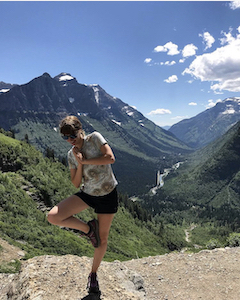

A Little About Me
My name is Layla, and I have an obsesion with the outdoors.
When school and work don't have me locked away, I am hiking with my dogs, draging my friends to mountain lakes, or rafting on one of the forks of the Flathead River.
My Experience

I have dedicated myself to becoming knowledgible of the Flathead Valley and surrounding areas. I have spent a considerable amount of time in GNP and Flathead Nat'l Forest. The Jewel Basin, located on the north end of the Swan Mountain range, is my favorite place in the world. There are many options for those of various skill levels.
My parents grew up in the valley, I have been educated in river guiding for white water and fly fishing. I am also a chronic student (having stretched out my BA for 6yrs), I often obsess over new routes, outdoor gear, and efficiency. If you are wondering what the next backpacking gadget you need, I'm your gal!